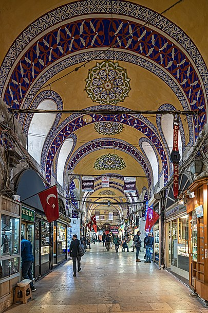

1958 Bursa Kapalıçarşı yangınında yanmayan tek yer olarak bilinir. 1958 yılında bir kez daha onarılıp aslına uygun hale getirilmiştir. Çarşı, çeşitli dönemlerde farklı adlarla anılmıştır: Yorgancılar, Sandıkçılar veyabDöşekçiler Pazarı gibi Günümüzde ise çarşıda çoğunlukla yorgan ve mobilya satılmaktadır.
Kapalıçarşı'nın inşaatına başladığı yıl olan 1460[kaynak belirtilmeli] çarşının kuruluş yılı olarak kabul görmüştür. Asıl büyük çarşı ise Kanuni Sultan Süleyman tarafından ahşap olarak inşa ettirilmiştir.
Dev ölçülü bir labirent gibi, 30.700 metrekarede 66 kadar sokağı, 4.000 kadar dükkânı ile Kapalıçarşı, İstanbul’un görülmesi gereken, benzersiz bir merkezidir. Adeta bir şehri andıran, bütünü ile örtülü bu site zaman içerisinde gelişip büyümüştür. İçinde son zamanlara kadar 5 cami, 1 mektep, 7 çeşme, 10 kuyu, 1 sebil, 1 şadırvan, 24 kapı, 17 han bulunmaktaydı.
15. yüzyıldan kalan kalın duvarlı, bir seri kubbe ile örtülü eski iki yapının etrafı sonraki yüzyıllarda, gelişen sokakların üzerleri örtülerek, ekler yapılarak bir alışveriş merkezi haline gelmiştir. Geçmişte burası her sokağında belirli mesleklerin yer aldığı ve bunların da, el işi imalatının (manifaktür) sıkı denetim altında bulundurulduğu, ticari ahlak ve törelere çok saygı gösterilen bir çarşı idi. Her türlü değerli kumaş, mücevherat, silah, antika eşya, konusunda nesillerce uzmanlaşmış aileler tarafından, tam bir güven içinde satışa sunulurdu. Geçen yüzyılın sonlarında deprem ve birkaç büyük yangın geçiren Kapalıçarşı eskisi gibi onarılmışsa da, geçmişteki özellikleri değişikliğe uğramıştır.
Bütün dükkânların genişliği aynı olacak şekilde inşa edilmiştir. Her sokakta ayrı ürünün ustaları loncalar halinde bulunurdu (yorgancılar, terlikçiler vs.) Satıcılar arasında rekâbet kesinlikle yasaktı. Hatta bir usta, tezgâhını dükkânın önüne çıkarıp kalabalığa göstererek ürün işleyemezdi. Ürünlere devletin belirlediğinden yüksek fiyat konulamazdı. 1894 İstanbul depreminde çarşının bazı duvarları ve bir kubbesi çöktü.
